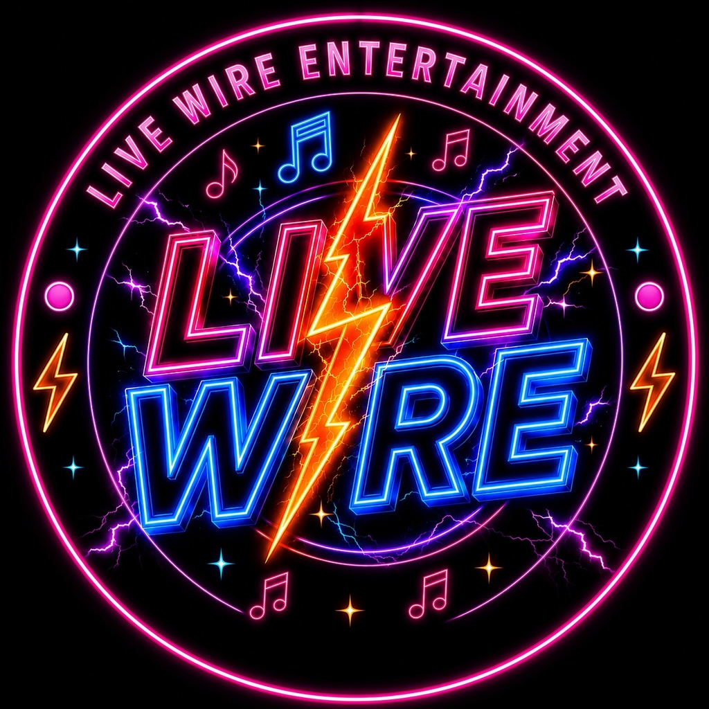

Music • Live Entertainment • Community
All of the Live Wire Entertainment shows in one place — from the flagship weekend nights to the midweek shows.
⚡ Home🍹 Live Wire Bar🎉 Fun & ExtrasHere you'll find the full Live Wire Entertainment show line-up, with each regular show listed together in one place.
🕢 Fridays from 7:30pm
Your weekend starts here! Music spanning the decades, big singalong favourites, forgotten gems, nostalgia, banter and plenty of feel-good energy from DJ Disco Dan at the Live Wire Bar.
🕗 Wednesdays from around 8pm
DJ Disco Dan brings a fresh Wednesday night to the Live Wire Bar with music, requests, banter, nostalgia and a set of simple new features to give Wednesdays their own Live Wire identity.
🕗 Thursdays from around 8pm
Mr Phoenix brings a package of music, banter and surprises to the Live Wire Bar. Expect variety, music memories and plenty of cheeky banter along the way.
🕢 Saturdays from 8pm
Next stop... The Music Train! Mr Phoenix takes the community on a musical journey through the decades, with big tunes, nostalgia, banter and plenty of surprises.